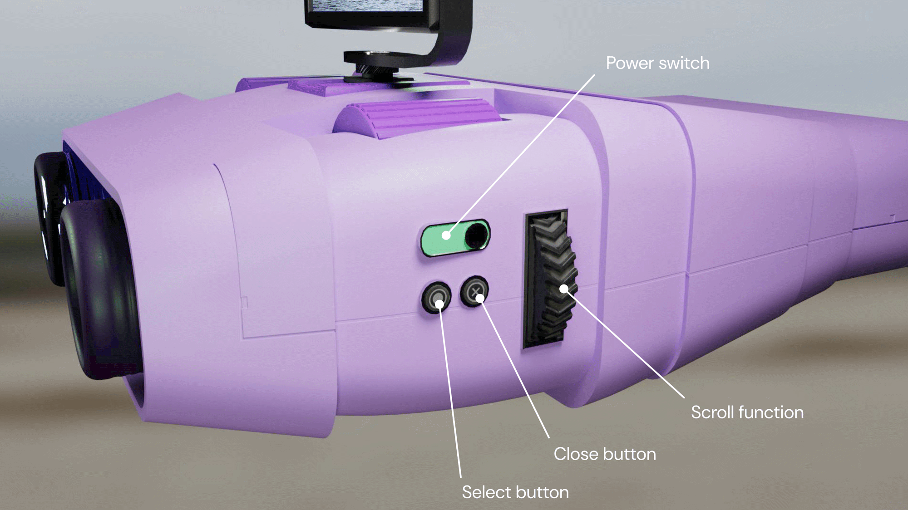
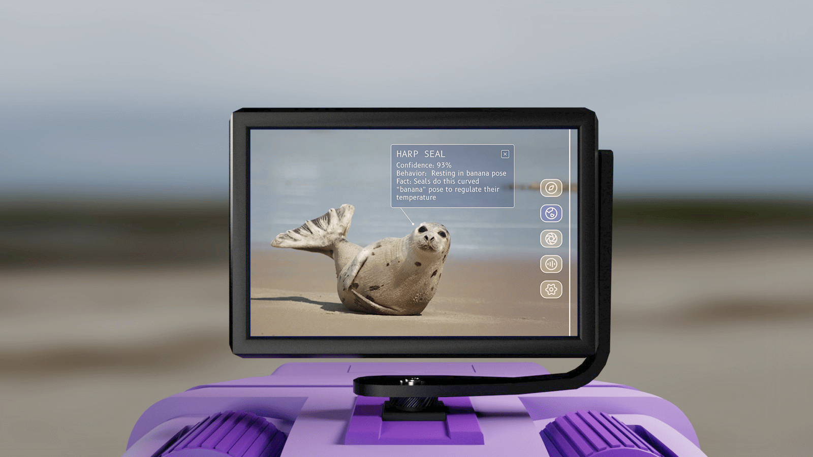
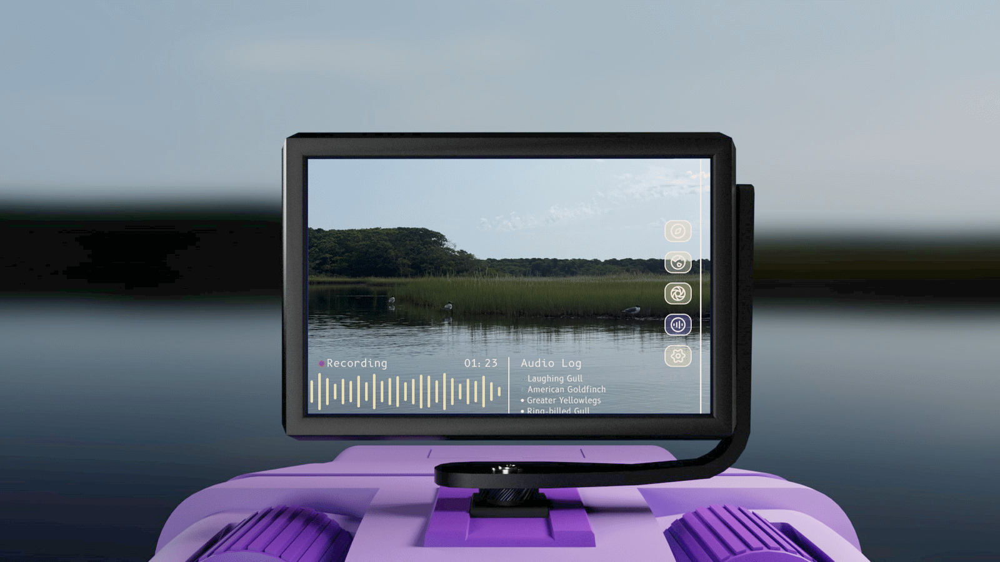
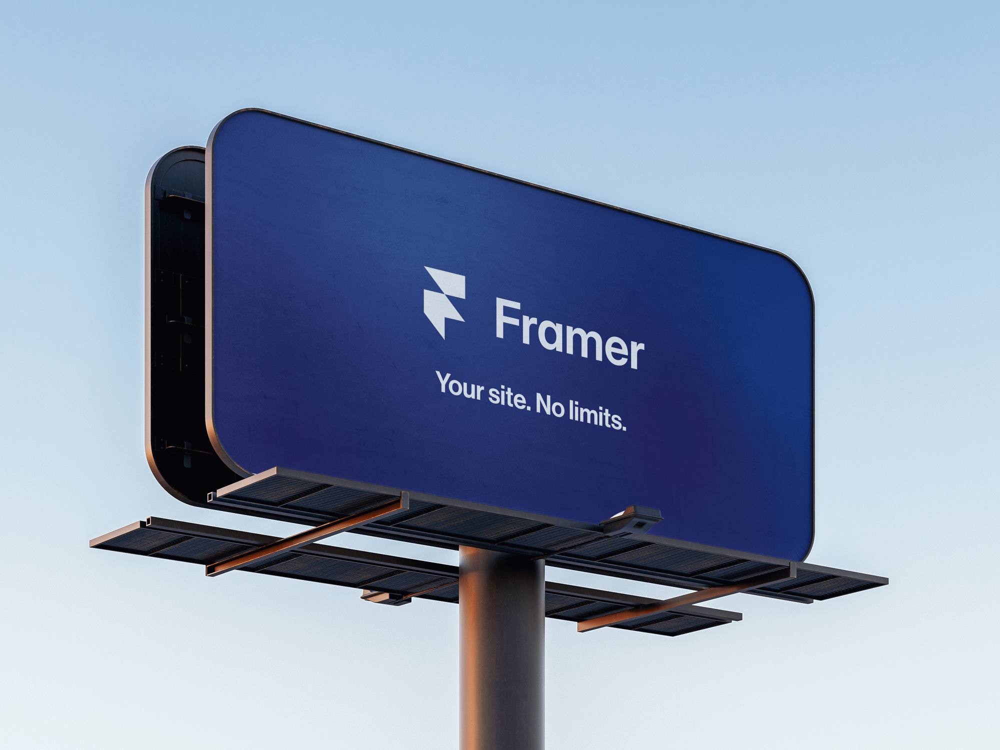
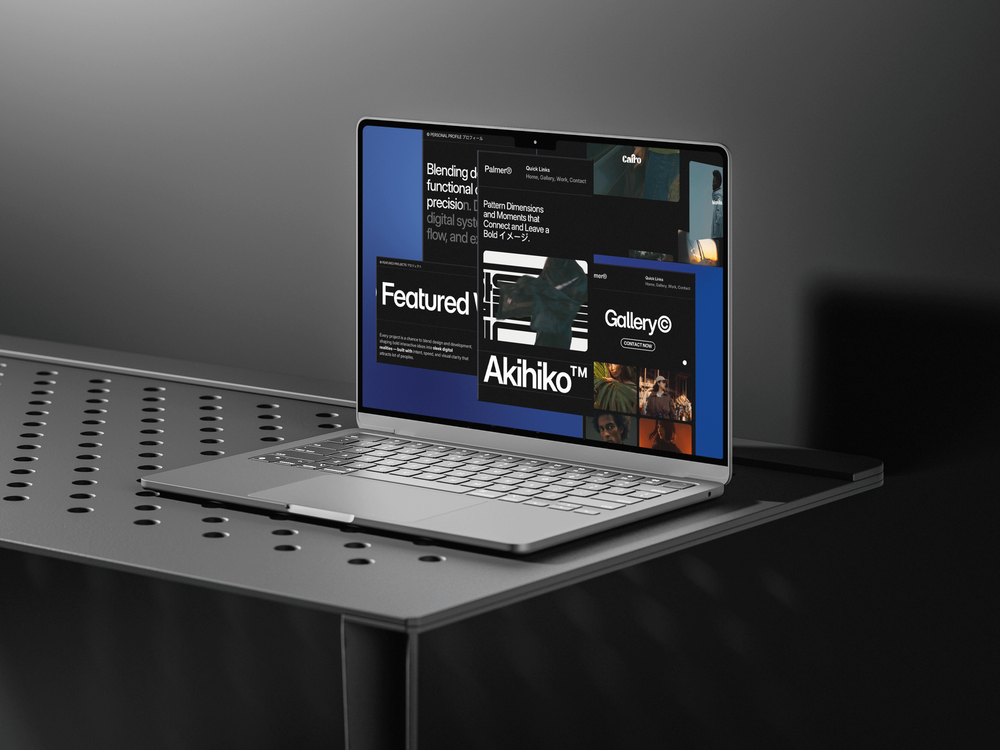
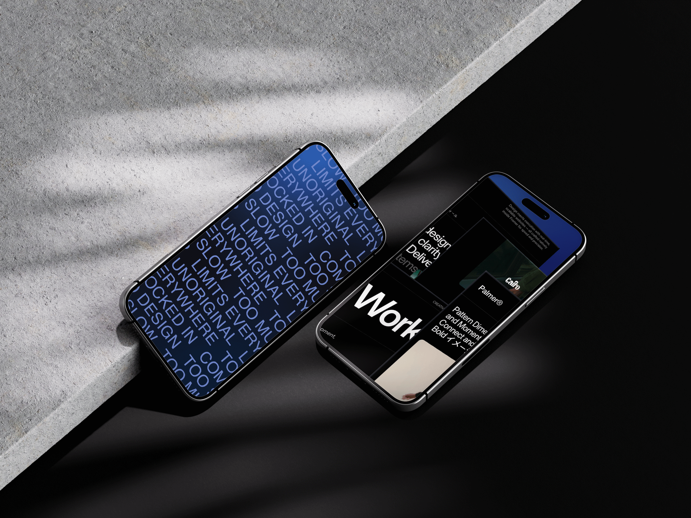
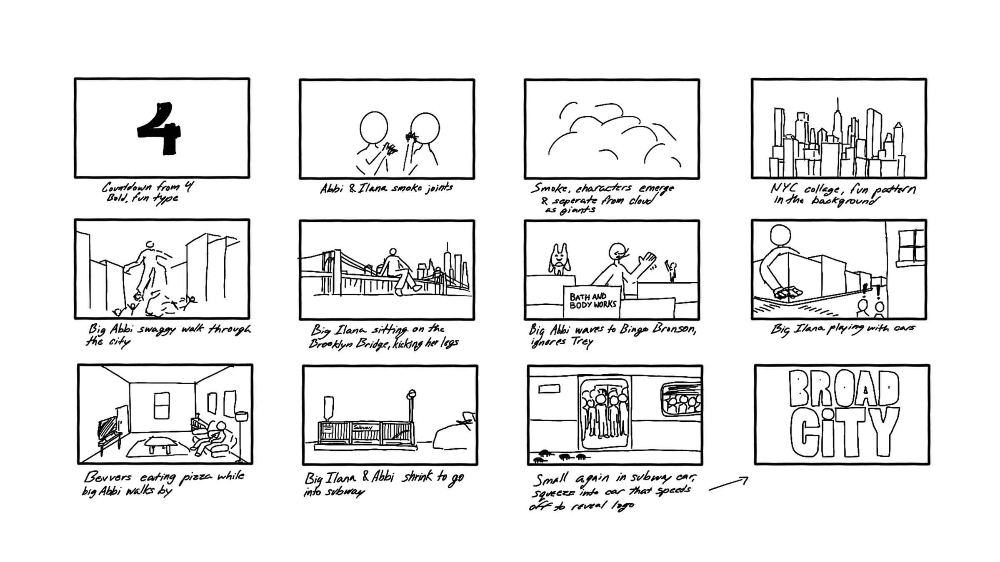
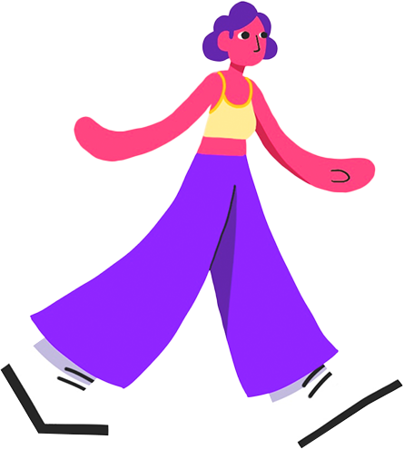
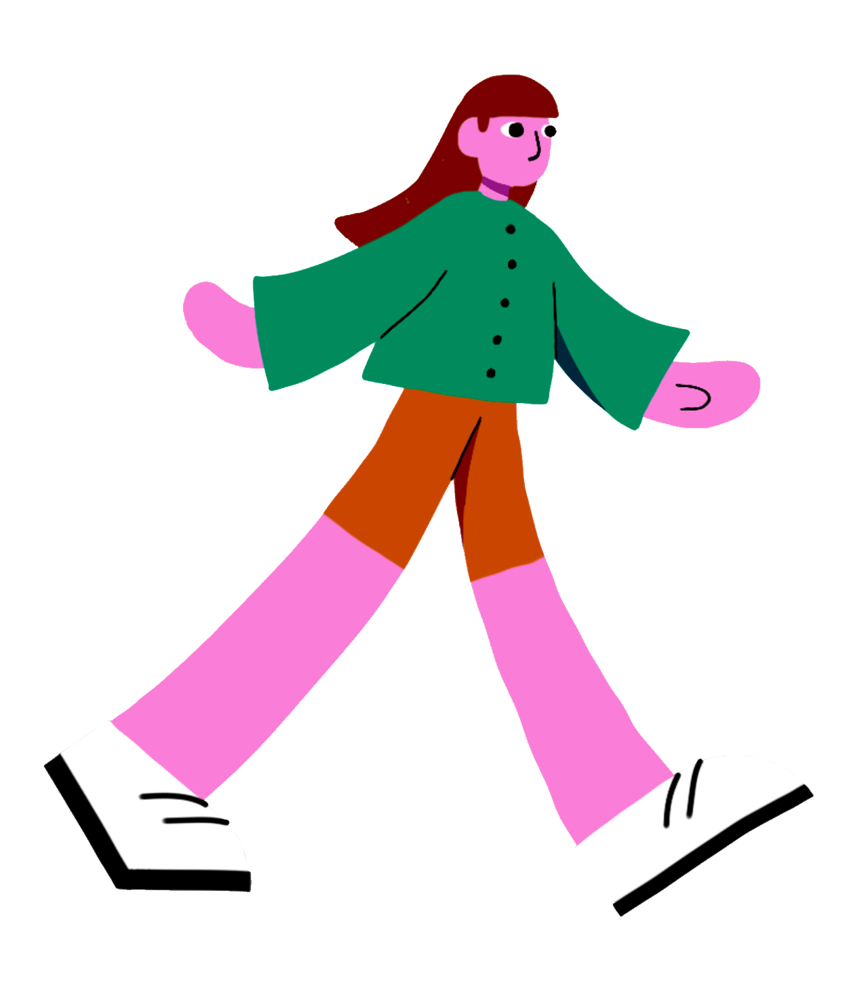

04.SketchbookLab_Tests
drag things around, it’s finehandle with care (or don’t)
PLAYGROUND
Side projects, experiments and things that didn’t need a reason. Pick something up, move it around, open it for notes.
SCOUT ONE
What I was testing: how a screen could change an object people already know how to use.
The brief: attach a screen to an everyday object so that it adds to, or changes, what the object does. I’m a birder, so I picked binoculars. Scout One is a pair of smart binoculars that tells you what you’re looking at, what it’s doing, and what you’re hearing.



FRAMER BRAND IDENT
What I was testing: how much a few words and a lot of motion can say about a brand.
The brief: a short promotional motion graphic for a company or product. I was building my portfolio in Framer at the time, so I picked it, and gave the ident the same clean, modern energy as the tool itself.



BROAD CITY
What I was testing: how hand-drawn characters could share the screen with real photos of New York.
The brief: an opening title sequence for a show or movie. My classmate Cecelia Wong and I picked Broad City. We animated Abbi and Ilana in Procreate, reworked the photos in Photoshop, and put it all together in After Effects.



ORBIS
What I was testing: add a one-line hook.
An interactive digital Etch A Sketch. Add the context someone needs before trying it.
POLARIS
What I was testing: add a one-line hook.
An interactive experience that uses hand tracking to explore gravity and clashing forces.
SIERRA BRANDING
What I was testing: add a one-line hook.
A brand system in progress for a photographer friend. So far: two logos and a business card.